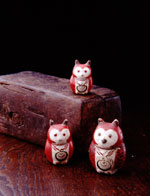

|

江戸時代、疱瘡（天然痘）はほとんどの人がさけて通ることのできない、生死にかかわる厄介な病気でした。自然治癒を待つだけで有効な治療方法のない当時、人びとはこの病気を疱瘡神の仕業としてたいへんに恐れました。疱瘡にかかると体中に赤い斑点ができるため、疱瘡神は赤いと考えられており、病人の身辺に赤く染められた紙や人形をまつって、疱瘡神がそちらに移ることを祈ったのではないかと思われます。当時疱瘡除けのお守りとして「赤物」と呼ばれる、赤で彩色された人形や玩具などが全国各地で大量に作られていました。
写真の人形たちは昭和十年出版の『郷土玩具大成』（有坂與太郎著）に掲載された人形と瓜二つです。さん俵（米俵のふた）に御幣をさし、赤物のみみずくやだるまをまつり、赤飯を供える、と解説されています。産地についてはまったく触れていませんが、山形方面から入手とのこと。山形、具体的には米沢から鶴岡、酒田までの最上川流域は各地の様ざまな人形や玩具（江戸期の作に限定すると今戸人形、江ノ島貝屏風、御所人形、御殿玩具、内裏雛など）が残されている地域です。
この人形たちは小粒で作風が洗練され、大量に作られたことがうかがえるので、産地は京都、大阪、江戸などの大都市ではないかと考えられます。京都、大阪の練物人形についてはかなり解明されていますので、江戸ではないかと密かに思っていましたが、残念ながら具体的な証拠がありませんでした。ところが、ある本に掲載されている錦絵によって、かつて浅草の田原町に練物人形が存在したことが確認できたのです。当時、観音さまの門前町・浅草は江戸を代表する観光地でした。これらの人形は疱瘡除けのお守りであると同時に、憧れの江戸土産でもあったのではないでしょうか。
|